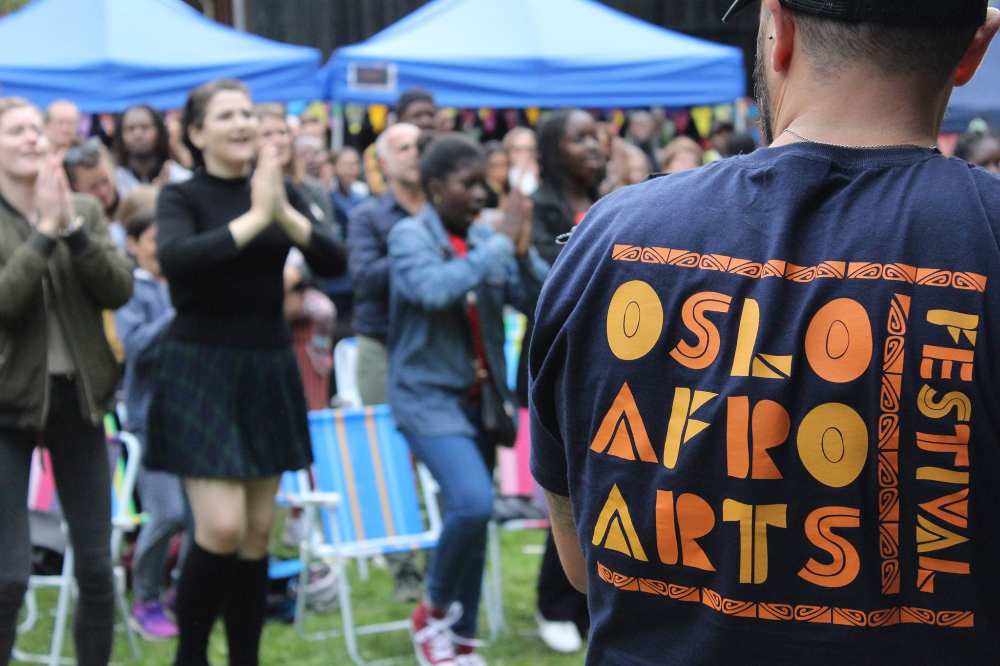

AUGUST, 9, 2021
The 7th Oslo Afro Arts Festival in 2021 Launches – Hear from The Founder and Get Your Tickets
Oslo Afro Arts Festival In collaboration with The Oslo Desk for a journal series covering the festival
- words by Ka Man Mak and Sawsen Khechab
OSLO (August 9, 2021) – The 7th edition of the Oslo Afro Arts
Festival (OAAF) will be held from 26-29 August 2021 in different
venues in Grønland, Oslo, where more than 20 nationalities will be
represented in up to 15 events over four days. The expected audience
is 1200 at this year’s events, where various performances will be
aimed towards children and youth.
Oslo Afro Arts Festival
(OAAF) was founded in 2014 by Cecilie Giskemo, a Norwegian jazz
vocalist and composer. The festival runs annually to celebrate
contributions from African tradition and culture in Norway through
art, music, food, discussions and seminars.
“When I left
Africa in 2012, Zimbabwe was in turmoil, and the news only covered
all the negative sides of the country’s situation. I felt there was
a need to also show all the amazing stuff that was going on, and I
focused on arts and culture. I was lucky to get involved in the arts
and activism communities in Harare, and worked with amazing poets,
freedom fighters, hip hop artists and musicians working with
traditional Zimbabwean music,” says Giskemo.
Giskemo has also run several cross-cultural arts projects, teaching
music in countries like Zimbabwe and Nepal. Giskemo and four other
Oslo-based Zimbabweans started Zimfest in 2014 and two years later,
expanded the concept to involve all other African countries.
“Zimfest Oslo became the Oslo Afro Arts Festival. The idea was to
collaborate with the then called Bergen Afro Arts festival and also
aim to expand the concept to other big cities in Norway. In that
way, African artists travelling to Norway could tour several
festivals, rather than just playing at one, and also, African arts
and culture could be more visible all over Norway,” adds Giskemo.
OAAF aims to work in line with the guidelines of the UN goals of
International Decade for People of African Descent through promoting
respect, protection and fulfilment of all human rights and
fundamental freedom for people of African origin.
Highlights of Oslo Afro Arts Festivals
Celebrating the diversity of art and music that is driven by African
tradition and culture in Norway, the 2021 edition of the OAAF
includes live concerts organised by various artists with captivating
sounds such as BEHARIE, B Da Sufi Akuvi and Germini Orleans, which
will be accompanied by various Afro dance workshops for children.
Particular highlights of the festival include also Refugee|ni|us – a
two-part exhibition platforming refugee and former refugee artists,
curated in collaboration with the Oslo-based former refugee painter
Khalid Shatta.
In his paintings, the artist evokes the sensations that many
refugees experience throughout their journey. He addresses the
feeling of being out of place while offering us the opportunity to
see the world through the prism that combines his memories, his
traumas and the struggle that will hopefully lead us to appreciate
the beauty of the world around us.
Other highlights include a lecture on decolonisation of the stage,
taking a critical look at the function of art and culture in
society, through Norwegian-Afro-Caribbean artist Thomas Talawa
Prestø; and a panel discussion on being queer in Africa, as there is
a false belief in many African countries that homosexuality is
“un-African” and something that has been imported from the West.
OAAF Dedicates to Lifting Up Artists
Giskemo was also a producer at Samspill International Music Network
until 2019, and there she realised that there were so many amazing
musicians from all over Africa living in Oslo and elsewhere in
Norway. She hopes that the festival can contribute towards
facilitating a stage for these artists.
“I hope the festival can bridge the gap between Norway and Africa,
and be a networking platform for all kinds of artistic expressions,
for African communities and people interested in African arts and
culture,” says Giskemo. “I hope all African communities will get a
sense of ownership in the festival and get more involved in
representing different countries from the continent. Furthermore,
people and artists that are interested in or involved with Africa
are important contributors, both on stage or in the audience, as
well as children and families and young people.”
In a time where COVID-19 has brought the world to an almost
standstill with a lot of uncertainty, the Oslo Afro Arts Festival
allows us to promote freedom of speech, human resilience, and bring
everyone closer through the performances of African artist refugees
and artists of African descendants living in Norway.
Director of Festival, George Daniels says, “We are taking all the
precautions provided by Oslo Kommune and at the same time, we want
to provide a space to lighten up the pandemic situation.”
On why the festival is important, he says “For me, it is all about
leaving a legacy and for my children to be exposed to African
culture. I want to be part of uplifting African culture and arts,
and I hope through the festival, we can highlight this even more
where it has not been done before. For example, in Africa, the topic
of being queer is a taboo subject. So we have a special session on
this at the festival to discuss it. Another is an exhibit where we
want refugees to be seen as human beings through the works of
Octopizzo. People don’t see this side often.”
OAAF is funded by Kulturrådet, Oslo Kommune, Eckbos Leget, Samspill,
and FrittOrd; and supported by Nordic Black Theatre, Den Norske
Kirke, Forandringshuset Grønland, Afrika.no, National museum, Løkka
Lyd.Interkulturel Museum, and JM Norway.
Part One – Migration of the Soul
Wednesday 25th August – Sunday 29th August 12PM-5PM at Kunsthall
Oslo
“Migration of the Soul” is part of a two-part exhibition platforming
refugee and former refugee artists, curated in collaboration with
the Oslo-based former refugee painter Khalid Shatta. The exhibition
at Kunsthall Oslo presents the masterful paintings and sketches of
Khalid.
When discussing the subject of migration, Khalid does not refer to
physical migration, but to the sensation of being out of place, and
the question of belonging in spirit. His art discusses how our
memories, stress, trauma and depression prevent us from utilising
our full potential, and how we can be enabled to enjoy the beautiful
aspects of the world surrounding us.
Khalid’s work is inspired by modernist painters, but also by ancient
civilization and culture, and highly influenced by the diverse local
figurative style and patterns of his birthplace, Sudan. In his
paintings, Khalid aims to portray the vast diversity of forms,
colours, patterns, sounds and smells deriving from the country,
looking to explore the concept of painting in different contexts,
forms, and styles.
Part Two – Refugee, genius, us
Friday 27th August 5PM-10PM & Saturday 28th August 10AM – 10PM
“Refugee, genius,us ” is part of a two-part exhibition platforming
refugee and former refugee artists. OAAF, in collaboration with the
Oslo-based painter and curator Khalid Shatta, will be celebrating
the creations of otherwise marginalised artists. The title
highlights the artistic talent that is being showcased, and the
power of collective creation which forms the fundament of the
exhibition project.
It is also a homage to the “Refugeenius” album, one of the
inspirations behind this project. The album is a beautiful piece of
art in which artists from refugee camps in Kenya collaborated with
Octopizzo, one of Kenya’s most profiled hip-hop artists, to produce
music pieces and videos. We now have the unique opportunity to
showcase their work alongside the masterful paintings of Khalid
Shatta.
Khalid’s work is inspired by modernist painters, but also by ancient
civilization and culture, and highly influenced by the diverse local
figurative style and patterns of his birthplace, Sudan. In his
paintings, Khalid aims to portray the vast diversity of forms,
colours, patterns, sounds and smells deriving from the country.
The photographs that are showcased in the exhibition will be
available for purchase. The sale proceeds will be donated to
programs of the Octopizzo Foundation which empower youth in slums
and refugee camps in Kenya through music, arts, creativity, and
sports.
LECTURE BY THOMAS TALAWA PRESTØ
THURSDAY 26TH AUGUST, 6.30PM – 8PM
With a long career in the artistic world and his Norwegian-Afro-Caribbean background, Thomas Talawa Prestø has taken a critical look at the function of art and culture in society. He aims to discuss the necessity of having a decolonial understanding of non-colonial artistic and cultural expressions by elaborating around the epistemological differences between African and Western lens and cosmology.
PANEL DISCUSSION: ROOTS – BEING QUEER IN AFRICA IS NOT UN-AFRICAN
SUNDAY 29TH AUGUST, 4PM – 5.30PM
There is a false belief in many African countries that homosexuality
is “un-African” and something that has been imported from the West.
The penal codes, often inherited from the colonial era, criminalize
homosexuality and the punishment varies from years in prison to the
death penalty.
This panel, led by Dr. Haley McEwen, Researcher at the Centre for
Diversity Studies and Associate Editor at the International Journal
of Critical Diversity Studies, addresses the roots of queerness in
African societies, how did colonialism impact the situation for
queer African people and questions what is the way forward based on
research that shows that in many African communities’ fluid sexual
identities were accepted and never criminalised.
About Oslo Afro Arts Festival
Oslo Afro Arts Festival (OAAF) was founded by Cecilie Giskemo in 2014 and runs annually in Oslo to celebrate the diversity of art and music driving from African tradition and culture in Norway. OAAF aims to work inline within the guidelines of the UN goals of International Decade for People of African Descent through promoting respect, protection and fulfilment of all human rights and fundamental freedom for people of African origin.
Contact details:
George Daniels
Director of festival
george@osloafroarts.no
This article is part of a journal series produced by The Oslo Desk in collaboration with Oslo Afro Arts Festival.